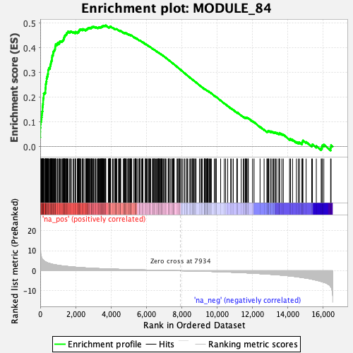

| | | Dataset | DE_genes2 |
| Phenotype | NoPhenotypeAvailable |
| Upregulated in class | na_pos |
| GeneSet | MODULE_84 |
| Enrichment Score (ES) | 0.4908991 |
| Normalized Enrichment Score (NES) | 2.3038976 |
| Nominal p-value | 0.0 |
| FDR q-value | 0.0 |
| FWER p-Value | 0.0 |
Table: GSEA Results Summary

Fig 1: Enrichment plot: MODULE_84
Profile of the Running ES Score & Positions of GeneSet Members on the Rank Ordered List
| PROBE | GENE SYMBOL | GENE_TITLE | RANK IN GENE LIST | RANK METRIC SCORE | RUNNING ES | CORE ENRICHMENT | | 1 | PLAU | | | 0 | 25.881 | 0.0372 | Yes |
| 2 | CCL5 | | | 5 | 15.806 | 0.0597 | Yes |
| 3 | ISG15 | | | 7 | 11.559 | 0.0763 | Yes |
| 4 | IL32 | | | 16 | 10.363 | 0.0907 | Yes |
| 5 | RGS10 | | | 31 | 8.171 | 0.1016 | Yes |
| 6 | PLSCR1 | | | 62 | 7.005 | 0.1098 | Yes |
| 7 | UBE2L6 | | | 74 | 6.681 | 0.1187 | Yes |
| 8 | PARP12 | | | 90 | 6.194 | 0.1267 | Yes |
| 9 | ITGB2 | | | 99 | 6.066 | 0.1349 | Yes |
| 10 | CYP27A1 | | | 110 | 5.875 | 0.1427 | Yes |
| 11 | STAT1 | | | 129 | 5.696 | 0.1498 | Yes |
| 12 | CD69 | | | 130 | 5.691 | 0.1580 | Yes |
| 13 | SLC7A7 | | | 139 | 5.587 | 0.1655 | Yes |
| 14 | IRF1 | | | 149 | 5.467 | 0.1728 | Yes |
| 15 | MX2 | | | 162 | 5.325 | 0.1798 | Yes |
| 16 | LAPTM5 | | | 165 | 5.298 | 0.1873 | Yes |
| 17 | LYN | | | 169 | 5.274 | 0.1947 | Yes |
| 18 | ISG20 | | | 191 | 5.144 | 0.2007 | Yes |
| 19 | ZYX | | | 195 | 5.100 | 0.2079 | Yes |
| 20 | CSF1R | | | 196 | 5.092 | 0.2152 | Yes |
| 21 | IFI44L | | | 246 | 4.677 | 0.2189 | Yes |
| 22 | CORO1A | | | 291 | 4.461 | 0.2226 | Yes |
| 23 | IFI35 | | | 292 | 4.461 | 0.2290 | Yes |
| 24 | MX1 | | | 294 | 4.454 | 0.2354 | Yes |
| 25 | CHST15 | | | 306 | 4.414 | 0.2410 | Yes |
| 26 | PDE4B | | | 310 | 4.393 | 0.2472 | Yes |
| 27 | CYBA | | | 313 | 4.381 | 0.2533 | Yes |
| 28 | BMP1 | | | 329 | 4.296 | 0.2586 | Yes |
| 29 | TAGLN | | | 341 | 4.258 | 0.2640 | Yes |
| 30 | GLRX | | | 359 | 4.182 | 0.2690 | Yes |
| 31 | SMTN | | | 360 | 4.181 | 0.2750 | Yes |
| 32 | TYMP | | | 384 | 4.064 | 0.2794 | Yes |
| 33 | HSPG2 | | | 392 | 4.031 | 0.2848 | Yes |
| 34 | FN1 | | | 423 | 3.913 | 0.2885 | Yes |
| 35 | IFIT1 | | | 424 | 3.910 | 0.2942 | Yes |
| 36 | PLEKHO1 | | | 444 | 3.854 | 0.2985 | Yes |
| 37 | IGFBP7 | | | 445 | 3.844 | 0.3041 | Yes |
| 38 | NINJ1 | | | 446 | 3.841 | 0.3096 | Yes |
| 39 | TNFAIP3 | | | 475 | 3.759 | 0.3133 | Yes |
| 40 | IL2RG | | | 487 | 3.731 | 0.3179 | Yes |
| 41 | CXCL9 | | | 553 | 3.561 | 0.3190 | Yes |
| 42 | PTP4A3 | | | 557 | 3.549 | 0.3239 | Yes |
| 43 | GFPT2 | | | 567 | 3.514 | 0.3284 | Yes |
| 44 | SLC25A39 | | | 581 | 3.467 | 0.3326 | Yes |
| 45 | ICAM3 | | | 597 | 3.414 | 0.3366 | Yes |
| 46 | MYL9 | | | 606 | 3.395 | 0.3410 | Yes |
| 47 | CDKN1A | | | 618 | 3.368 | 0.3451 | Yes |
| 48 | MMP9 | | | 641 | 3.327 | 0.3486 | Yes |
| 49 | OLR1 | | | 660 | 3.289 | 0.3522 | Yes |
| 50 | IFI27 | | | 665 | 3.279 | 0.3566 | Yes |
| 51 | TGFBI | | | 668 | 3.267 | 0.3612 | Yes |
| 52 | PLEKHO2 | | | 675 | 3.249 | 0.3655 | Yes |
| 53 | SERPINE1 | | | 681 | 3.229 | 0.3699 | Yes |
| 54 | FAM214B | | | 722 | 3.158 | 0.3719 | Yes |
| 55 | LIF | | | 724 | 3.157 | 0.3764 | Yes |
| 56 | MAN2B1 | | | 736 | 3.134 | 0.3802 | Yes |
| 57 | RBM38 | | | 740 | 3.128 | 0.3845 | Yes |
| 58 | NCF2 | | | 769 | 3.084 | 0.3872 | Yes |
| 59 | DNM2 | | | 794 | 3.056 | 0.3901 | Yes |
| 60 | LGMN | | | 818 | 3.014 | 0.3931 | Yes |
| 61 | LTBR | | | 836 | 2.971 | 0.3963 | Yes |
| 62 | COPE | | | 843 | 2.959 | 0.4002 | Yes |
| 63 | RNASE1 | | | 846 | 2.949 | 0.4043 | Yes |
| 64 | ICAM1 | | | 852 | 2.937 | 0.4082 | Yes |
| 65 | COL6A1 | | | 874 | 2.901 | 0.4111 | Yes |
| 66 | STX11 | | | 876 | 2.900 | 0.4152 | Yes |
| 67 | SRGN | | | 957 | 2.785 | 0.4142 | Yes |
| 68 | IL1B | | | 989 | 2.750 | 0.4162 | Yes |
| 69 | BCL2A1 | | | 991 | 2.747 | 0.4201 | Yes |
| 70 | SLC16A3 | | | 1074 | 2.630 | 0.4188 | Yes |
| 71 | S100A11 | | | 1083 | 2.619 | 0.4221 | Yes |
| 72 | B2M | | | 1099 | 2.604 | 0.4249 | Yes |
| 73 | VCAN | | | 1131 | 2.567 | 0.4267 | Yes |
| 74 | CXCL16 | | | 1195 | 2.470 | 0.4263 | Yes |
| 75 | CD14 | | | 1235 | 2.439 | 0.4274 | Yes |
| 76 | CXCL1 | | | 1270 | 2.390 | 0.4287 | Yes |
| 77 | APOE | | | 1289 | 2.370 | 0.4310 | Yes |
| 78 | SELL | | | 1312 | 2.345 | 0.4330 | Yes |
| 79 | ALPL | | | 1330 | 2.326 | 0.4353 | Yes |
| 80 | UBD | | | 1337 | 2.325 | 0.4383 | Yes |
| 81 | NNMT | | | 1343 | 2.321 | 0.4413 | Yes |
| 82 | LMO4 | | | 1364 | 2.299 | 0.4434 | Yes |
| 83 | CXCL8 | | | 1367 | 2.297 | 0.4466 | Yes |
| 84 | C3AR1 | | | 1383 | 2.286 | 0.4489 | Yes |
| 85 | COL6A2 | | | 1406 | 2.265 | 0.4508 | Yes |
| 86 | TBC1D2B | | | 1429 | 2.239 | 0.4527 | Yes |
| 87 | GBP1 | | | 1468 | 2.209 | 0.4535 | Yes |
| 88 | RNASE6 | | | 1484 | 2.191 | 0.4557 | Yes |
| 89 | CTSC | | | 1504 | 2.173 | 0.4577 | Yes |
| 90 | GRN | | | 1505 | 2.173 | 0.4608 | Yes |
| 91 | SLC38A10 | | | 1535 | 2.147 | 0.4621 | Yes |
| 92 | IFI44 | | | 1561 | 2.121 | 0.4636 | Yes |
| 93 | CTSS | | | 1570 | 2.115 | 0.4661 | Yes |
| 94 | IL4R | | | 1663 | 2.026 | 0.4634 | Yes |
| 95 | FST | | | 1695 | 1.995 | 0.4643 | Yes |
| 96 | STAT4 | | | 1703 | 1.987 | 0.4667 | Yes |
| 97 | HLA-C | | | 1765 | 1.943 | 0.4657 | Yes |
| 98 | MUC1 | | | 1861 | 1.867 | 0.4625 | Yes |
| 99 | IL27RA | | | 1906 | 1.837 | 0.4624 | Yes |
| 100 | PI3 | | | 1980 | 1.768 | 0.4605 | Yes |
| 101 | TCF7 | | | 1989 | 1.762 | 0.4625 | Yes |
| 102 | IFI30 | | | 1993 | 1.760 | 0.4648 | Yes |
| 103 | GZMA | | | 2095 | 1.687 | 0.4610 | Yes |
| 104 | GCH1 | | | 2107 | 1.677 | 0.4627 | Yes |
| 105 | RBP1 | | | 2133 | 1.661 | 0.4636 | Yes |
| 106 | SECTM1 | | | 2167 | 1.639 | 0.4639 | Yes |
| 107 | CCL2 | | | 2172 | 1.637 | 0.4660 | Yes |
| 108 | LGALS3 | | | 2175 | 1.635 | 0.4682 | Yes |
| 109 | PDGFRA | | | 2198 | 1.621 | 0.4692 | Yes |
| 110 | PLBD1 | | | 2205 | 1.615 | 0.4711 | Yes |
| 111 | SERPINA1 | | | 2231 | 1.598 | 0.4719 | Yes |
| 112 | TNFAIP2 | | | 2236 | 1.597 | 0.4739 | Yes |
| 113 | LRCH4 | | | 2286 | 1.571 | 0.4732 | Yes |
| 114 | ACTN1 | | | 2289 | 1.568 | 0.4753 | Yes |
| 115 | SNCG | | | 2366 | 1.513 | 0.4728 | Yes |
| 116 | SLC6A2 | | | 2400 | 1.493 | 0.4729 | Yes |
| 117 | LYZ | | | 2414 | 1.483 | 0.4742 | Yes |
| 118 | CHI3L2 | | | 2416 | 1.482 | 0.4763 | Yes |
| 119 | TLR2 | | | 2476 | 1.456 | 0.4747 | Yes |
| 120 | HLA-DQA1 | | | 2568 | 1.406 | 0.4711 | Yes |
| 121 | MAT1A | | | 2582 | 1.397 | 0.4723 | Yes |
| 122 | CLDN9 | | | 2588 | 1.396 | 0.4740 | Yes |
| 123 | MDK | | | 2614 | 1.378 | 0.4744 | Yes |
| 124 | ACTA2 | | | 2640 | 1.367 | 0.4748 | Yes |
| 125 | GBP2 | | | 2643 | 1.365 | 0.4767 | Yes |
| 126 | MFAP2 | | | 2672 | 1.352 | 0.4769 | Yes |
| 127 | IL1R1 | | | 2697 | 1.339 | 0.4773 | Yes |
| 128 | SELPLG | | | 2700 | 1.337 | 0.4791 | Yes |
| 129 | RGL1 | | | 2724 | 1.321 | 0.4796 | Yes |
| 130 | CSF3R | | | 2743 | 1.310 | 0.4803 | Yes |
| 131 | ADAM19 | | | 2786 | 1.293 | 0.4796 | Yes |
| 132 | COL1A2 | | | 2789 | 1.291 | 0.4813 | Yes |
| 133 | IFNGR1 | | | 2819 | 1.277 | 0.4814 | Yes |
| 134 | EDA | | | 2876 | 1.255 | 0.4797 | Yes |
| 135 | ST6GAL1 | | | 2877 | 1.254 | 0.4815 | Yes |
| 136 | CD4 | | | 2889 | 1.247 | 0.4826 | Yes |
| 137 | ALOX5 | | | 2906 | 1.236 | 0.4834 | Yes |
| 138 | PPBP | | | 2931 | 1.224 | 0.4837 | Yes |
| 139 | CRYAB | | | 2938 | 1.221 | 0.4851 | Yes |
| 140 | SDC1 | | | 2989 | 1.200 | 0.4837 | Yes |
| 141 | DHRS3 | | | 3005 | 1.194 | 0.4845 | Yes |
| 142 | LCK | | | 3012 | 1.190 | 0.4858 | Yes |
| 143 | N4BP2L1 | | | 3070 | 1.167 | 0.4840 | Yes |
| 144 | VCAM1 | | | 3121 | 1.146 | 0.4825 | Yes |
| 145 | PSD4 | | | 3129 | 1.143 | 0.4837 | Yes |
| 146 | S100A8 | | | 3149 | 1.133 | 0.4842 | Yes |
| 147 | SRRM2 | | | 3225 | 1.102 | 0.4811 | Yes |
| 148 | CCL21 | | | 3264 | 1.087 | 0.4803 | Yes |
| 149 | STOM | | | 3275 | 1.082 | 0.4812 | Yes |
| 150 | SLPI | | | 3287 | 1.078 | 0.4821 | Yes |
| 151 | LAP3 | | | 3311 | 1.072 | 0.4822 | Yes |
| 152 | RARRES2 | | | 3333 | 1.063 | 0.4825 | Yes |
| 153 | RAC2 | | | 3362 | 1.053 | 0.4822 | Yes |
| 154 | CD74 | | | 3387 | 1.043 | 0.4822 | Yes |
| 155 | SPSB1 | | | 3416 | 1.033 | 0.4820 | Yes |
| 156 | BAIAP3 | | | 3430 | 1.028 | 0.4827 | Yes |
| 157 | HLA-A | | | 3436 | 1.026 | 0.4838 | Yes |
| 158 | LTF | | | 3461 | 1.017 | 0.4838 | Yes |
| 159 | JUNB | | | 3462 | 1.017 | 0.4853 | Yes |
| 160 | S100A9 | | | 3473 | 1.014 | 0.4861 | Yes |
| 161 | C1S | | | 3483 | 1.011 | 0.4870 | Yes |
| 162 | HLA-DRB1 | | | 3527 | 0.996 | 0.4858 | Yes |
| 163 | UBXN1 | | | 3528 | 0.996 | 0.4872 | Yes |
| 164 | CCND1 | | | 3532 | 0.996 | 0.4884 | Yes |
| 165 | MB | | | 3562 | 0.985 | 0.4881 | Yes |
| 166 | COX7A1 | | | 3563 | 0.984 | 0.4895 | Yes |
| 167 | AP1M1 | | | 3601 | 0.969 | 0.4886 | Yes |
| 168 | ITGAM | | | 3608 | 0.967 | 0.4896 | Yes |
| 169 | PARP14 | | | 3632 | 0.956 | 0.4895 | Yes |
| 170 | DAB2 | | | 3665 | 0.945 | 0.4889 | Yes |
| 171 | S100P | | | 3686 | 0.937 | 0.4890 | Yes |
| 172 | SLC40A1 | | | 3698 | 0.930 | 0.4897 | Yes |
| 173 | MAGI1 | | | 3701 | 0.929 | 0.4909 | Yes |
| 174 | GNA15 | | | 3850 | 0.880 | 0.4830 | No |
| 175 | FCGRT | | | 3887 | 0.871 | 0.4820 | No |
| 176 | CD300A | | | 3892 | 0.869 | 0.4830 | No |
| 177 | LAMA3 | | | 3896 | 0.869 | 0.4841 | No |
| 178 | SLC9A3R1 | | | 3928 | 0.859 | 0.4834 | No |
| 179 | TRIM22 | | | 3942 | 0.854 | 0.4838 | No |
| 180 | KCND3 | | | 3945 | 0.851 | 0.4849 | No |
| 181 | LGALS9 | | | 3950 | 0.850 | 0.4859 | No |
| 182 | TLR1 | | | 3968 | 0.846 | 0.4860 | No |
| 183 | CCL19 | | | 3986 | 0.841 | 0.4862 | No |
| 184 | RABL6 | | | 4090 | 0.810 | 0.4810 | No |
| 185 | HLA-DQB1 | | | 4127 | 0.802 | 0.4799 | No |
| 186 | ATP2A3 | | | 4211 | 0.774 | 0.4759 | No |
| 187 | NCF4 | | | 4238 | 0.766 | 0.4754 | No |
| 188 | TNFRSF1B | | | 4262 | 0.761 | 0.4750 | No |
| 189 | ITPR3 | | | 4272 | 0.758 | 0.4756 | No |
| 190 | ALOX5AP | | | 4297 | 0.750 | 0.4751 | No |
| 191 | IGFBP2 | | | 4303 | 0.748 | 0.4759 | No |
| 192 | PCOLCE | | | 4320 | 0.744 | 0.4760 | No |
| 193 | PLAC8 | | | 4423 | 0.714 | 0.4707 | No |
| 194 | TNFSF12 | | | 4453 | 0.706 | 0.4699 | No |
| 195 | ARHGDIB | | | 4494 | 0.695 | 0.4684 | No |
| 196 | CDH1 | | | 4513 | 0.690 | 0.4683 | No |
| 197 | IL1RN | | | 4515 | 0.689 | 0.4692 | No |
| 198 | TNFSF10 | | | 4539 | 0.682 | 0.4688 | No |
| 199 | ENG | | | 4544 | 0.679 | 0.4695 | No |
| 200 | AEBP1 | | | 4695 | 0.639 | 0.4611 | No |
| 201 | KYNU | | | 4743 | 0.627 | 0.4591 | No |
| 202 | CAPG | | | 4747 | 0.626 | 0.4598 | No |
| 203 | FAM53B | | | 4769 | 0.621 | 0.4594 | No |
| 204 | ABCA1 | | | 4776 | 0.620 | 0.4599 | No |
| 205 | NRG2 | | | 4780 | 0.619 | 0.4607 | No |
| 206 | NCF1C | | | 4798 | 0.616 | 0.4605 | No |
| 207 | LCP1 | | | 4828 | 0.611 | 0.4596 | No |
| 208 | LRRC32 | | | 4855 | 0.604 | 0.4588 | No |
| 209 | HLA-DRB5 | | | 4863 | 0.602 | 0.4593 | No |
| 210 | TRPV2 | | | 4940 | 0.584 | 0.4554 | No |
| 211 | HLA-DRA | | | 4993 | 0.572 | 0.4530 | No |
| 212 | TRIB2 | | | 4996 | 0.571 | 0.4537 | No |
| 213 | KRT19 | | | 5017 | 0.566 | 0.4532 | No |
| 214 | SLC15A2 | | | 5029 | 0.564 | 0.4534 | No |
| 215 | RAB31 | | | 5075 | 0.551 | 0.4514 | No |
| 216 | PIM2 | | | 5094 | 0.546 | 0.4510 | No |
| 217 | TRIM29 | | | 5125 | 0.537 | 0.4500 | No |
| 218 | KCTD17 | | | 5132 | 0.534 | 0.4504 | No |
| 219 | SRPX | | | 5137 | 0.533 | 0.4509 | No |
| 220 | IGFBP3 | | | 5172 | 0.526 | 0.4495 | No |
| 221 | BCL6 | | | 5290 | 0.494 | 0.4430 | No |
| 222 | ST6GALNAC4 | | | 5350 | 0.481 | 0.4400 | No |
| 223 | PNRC1 | | | 5365 | 0.476 | 0.4398 | No |
| 224 | HLA-DMA | | | 5377 | 0.474 | 0.4398 | No |
| 225 | HCK | | | 5395 | 0.471 | 0.4395 | No |
| 226 | TFF3 | | | 5405 | 0.469 | 0.4396 | No |
| 227 | COL4A1 | | | 5458 | 0.459 | 0.4370 | No |
| 228 | ADIRF | | | 5525 | 0.444 | 0.4336 | No |
| 229 | CYTH4 | | | 5597 | 0.427 | 0.4298 | No |
| 230 | AQP1 | | | 5612 | 0.424 | 0.4295 | No |
| 231 | TNFRSF25 | | | 5619 | 0.422 | 0.4297 | No |
| 232 | PECAM1 | | | 5633 | 0.420 | 0.4295 | No |
| 233 | SERPING1 | | | 5646 | 0.417 | 0.4294 | No |
| 234 | GJB1 | | | 5730 | 0.399 | 0.4248 | No |
| 235 | IKBKG | | | 5768 | 0.391 | 0.4231 | No |
| 236 | APOD | | | 5791 | 0.387 | 0.4223 | No |
| 237 | KDM5D | | | 5797 | 0.385 | 0.4225 | No |
| 238 | POMZP3 | | | 5804 | 0.384 | 0.4227 | No |
| 239 | CADPS2 | | | 5937 | 0.358 | 0.4150 | No |
| 240 | ADAMTSL4 | | | 5940 | 0.357 | 0.4154 | No |
| 241 | GMEB1 | | | 5948 | 0.356 | 0.4155 | No |
| 242 | ACP5 | | | 6001 | 0.346 | 0.4128 | No |
| 243 | ANKFY1 | | | 6030 | 0.340 | 0.4115 | No |
| 244 | ENTPD2 | | | 6044 | 0.336 | 0.4112 | No |
| 245 | IER3 | | | 6115 | 0.322 | 0.4073 | No |
| 246 | HSPA6 | | | 6147 | 0.316 | 0.4059 | No |
| 247 | NGFR | | | 6150 | 0.315 | 0.4062 | No |
| 248 | MAL | | | 6188 | 0.307 | 0.4043 | No |
| 249 | PLEC | | | 6212 | 0.299 | 0.4033 | No |
| 250 | CD72 | | | 6243 | 0.295 | 0.4019 | No |
| 251 | FGL2 | | | 6344 | 0.277 | 0.3961 | No |
| 252 | SEMA4A | | | 6361 | 0.273 | 0.3955 | No |
| 253 | TBX1 | | | 6378 | 0.268 | 0.3949 | No |
| 254 | RHOH | | | 6419 | 0.261 | 0.3928 | No |
| 255 | SCN2B | | | 6434 | 0.257 | 0.3923 | No |
| 256 | CD6 | | | 6458 | 0.252 | 0.3912 | No |
| 257 | VWF | | | 6460 | 0.252 | 0.3915 | No |
| 258 | DBP | | | 6525 | 0.239 | 0.3879 | No |
| 259 | DUSP6 | | | 6555 | 0.233 | 0.3864 | No |
| 260 | FPR1 | | | 6612 | 0.221 | 0.3833 | No |
| 261 | THRA | | | 6623 | 0.219 | 0.3830 | No |
| 262 | COMP | | | 6663 | 0.211 | 0.3809 | No |
| 263 | DGKA | | | 6676 | 0.207 | 0.3804 | No |
| 264 | LSP1 | | | 6682 | 0.207 | 0.3804 | No |
| 265 | MYH11 | | | 6687 | 0.206 | 0.3805 | No |
| 266 | LIPA | | | 6735 | 0.195 | 0.3778 | No |
| 267 | WNT10B | | | 6751 | 0.193 | 0.3772 | No |
| 268 | CD86 | | | 6752 | 0.193 | 0.3775 | No |
| 269 | PTPRCAP | | | 6791 | 0.186 | 0.3754 | No |
| 270 | ECE2 | | | 6827 | 0.180 | 0.3735 | No |
| 271 | FERMT3 | | | 6840 | 0.178 | 0.3730 | No |
| 272 | CSTA | | | 6872 | 0.175 | 0.3713 | No |
| 273 | MAFB | | | 6880 | 0.174 | 0.3711 | No |
| 274 | DVL1 | | | 6890 | 0.172 | 0.3708 | No |
| 275 | QPCT | | | 6942 | 0.165 | 0.3679 | No |
| 276 | PTPRE | | | 6964 | 0.161 | 0.3668 | No |
| 277 | IL7R | | | 7029 | 0.150 | 0.3630 | No |
| 278 | STMN1 | | | 7057 | 0.145 | 0.3616 | No |
| 279 | TNFRSF10D | | | 7066 | 0.142 | 0.3613 | No |
| 280 | KRT18 | | | 7110 | 0.132 | 0.3588 | No |
| 281 | GAS1 | | | 7229 | 0.111 | 0.3517 | No |
| 282 | LMO2 | | | 7262 | 0.104 | 0.3498 | No |
| 283 | CES1 | | | 7270 | 0.103 | 0.3495 | No |
| 284 | CD37 | | | 7272 | 0.102 | 0.3496 | No |
| 285 | LTC4S | | | 7285 | 0.100 | 0.3490 | No |
| 286 | TACC2 | | | 7352 | 0.088 | 0.3451 | No |
| 287 | TIMP2 | | | 7432 | 0.076 | 0.3403 | No |
| 288 | HCLS1 | | | 7454 | 0.073 | 0.3391 | No |
| 289 | KRT5 | | | 7494 | 0.066 | 0.3367 | No |
| 290 | CASP1 | | | 7522 | 0.061 | 0.3352 | No |
| 291 | EPB41L3 | | | 7535 | 0.059 | 0.3345 | No |
| 292 | LRMP | | | 7549 | 0.056 | 0.3338 | No |
| 293 | DEF6 | | | 7557 | 0.055 | 0.3334 | No |
| 294 | CCHCR1 | | | 7570 | 0.053 | 0.3328 | No |
| 295 | MST1L | | | 7732 | 0.028 | 0.3228 | No |
| 296 | ARHGEF6 | | | 7754 | 0.024 | 0.3215 | No |
| 297 | MGLL | | | 7826 | 0.013 | 0.3172 | No |
| 298 | LILRB3 | | | 7829 | 0.012 | 0.3171 | No |
| 299 | PPL | | | 7856 | 0.010 | 0.3155 | No |
| 300 | TGM2 | | | 7888 | 0.006 | 0.3135 | No |
| 301 | CD79A | | | 7944 | -0.001 | 0.3101 | No |
| 302 | KRT14 | | | 7975 | -0.007 | 0.3083 | No |
| 303 | CYSTM1 | | | 8054 | -0.020 | 0.3035 | No |
| 304 | TSPAN7 | | | 8146 | -0.032 | 0.2979 | No |
| 305 | MTUS1 | | | 8179 | -0.038 | 0.2960 | No |
| 306 | SLC7A8 | | | 8280 | -0.052 | 0.2898 | No |
| 307 | ACSL1 | | | 8294 | -0.054 | 0.2891 | No |
| 308 | CELF2 | | | 8323 | -0.061 | 0.2875 | No |
| 309 | S1PR4 | | | 8423 | -0.079 | 0.2814 | No |
| 310 | ANPEP | | | 8496 | -0.092 | 0.2771 | No |
| 311 | FABP4 | | | 8523 | -0.097 | 0.2756 | No |
| 312 | IGFBP4 | | | 8591 | -0.108 | 0.2716 | No |
| 313 | CFD | | | 8595 | -0.109 | 0.2716 | No |
| 314 | CCND2 | | | 8621 | -0.113 | 0.2702 | No |
| 315 | ANXA1 | | | 8670 | -0.124 | 0.2674 | No |
| 316 | GPNMB | | | 8676 | -0.125 | 0.2673 | No |
| 317 | OLFML2B | | | 8735 | -0.138 | 0.2639 | No |
| 318 | GPX3 | | | 8776 | -0.148 | 0.2616 | No |
| 319 | ST3GAL5 | | | 8807 | -0.152 | 0.2600 | No |
| 320 | LMO3 | | | 8996 | -0.191 | 0.2486 | No |
| 321 | TP63 | | | 9068 | -0.207 | 0.2445 | No |
| 322 | TNFAIP8 | | | 9123 | -0.219 | 0.2415 | No |
| 323 | BASP1 | | | 9154 | -0.227 | 0.2399 | No |
| 324 | NUPR1 | | | 9268 | -0.259 | 0.2333 | No |
| 325 | CCDC9 | | | 9278 | -0.263 | 0.2331 | No |
| 326 | TGFBR2 | | | 9293 | -0.264 | 0.2326 | No |
| 327 | IL1RAP | | | 9308 | -0.267 | 0.2321 | No |
| 328 | PER1 | | | 9314 | -0.268 | 0.2322 | No |
| 329 | S100A4 | | | 9344 | -0.275 | 0.2308 | No |
| 330 | EMP3 | | | 9393 | -0.288 | 0.2282 | No |
| 331 | ITGB7 | | | 9438 | -0.300 | 0.2259 | No |
| 332 | DPYD | | | 9449 | -0.303 | 0.2258 | No |
| 333 | DHRS2 | | | 9453 | -0.303 | 0.2260 | No |
| 334 | LAMP3 | | | 9469 | -0.306 | 0.2255 | No |
| 335 | TBXAS1 | | | 9498 | -0.313 | 0.2242 | No |
| 336 | NAPSA | | | 9551 | -0.324 | 0.2215 | No |
| 337 | KRT4 | | | 9594 | -0.338 | 0.2194 | No |
| 338 | CLEC2B | | | 9631 | -0.347 | 0.2176 | No |
| 339 | MSI1 | | | 9671 | -0.361 | 0.2157 | No |
| 340 | ITM2A | | | 9840 | -0.412 | 0.2059 | No |
| 341 | SEMA4D | | | 9899 | -0.428 | 0.2029 | No |
| 342 | TSC22D3 | | | 9937 | -0.439 | 0.2013 | No |
| 343 | IL6 | | | 9946 | -0.445 | 0.2014 | No |
| 344 | IGSF6 | | | 10196 | -0.524 | 0.1867 | No |
| 345 | DDIT4 | | | 10402 | -0.587 | 0.1749 | No |
| 346 | SLAMF8 | | | 10478 | -0.612 | 0.1711 | No |
| 347 | CYBB | | | 10595 | -0.661 | 0.1648 | No |
| 348 | DNASE1L3 | | | 10760 | -0.711 | 0.1557 | No |
| 349 | IFI16 | | | 10817 | -0.735 | 0.1533 | No |
| 350 | DOCK2 | | | 10912 | -0.770 | 0.1486 | No |
| 351 | CAV1 | | | 11109 | -0.845 | 0.1376 | No |
| 352 | IRF8 | | | 11133 | -0.854 | 0.1374 | No |
| 353 | EVI2A | | | 11135 | -0.855 | 0.1386 | No |
| 354 | KRT15 | | | 11359 | -0.952 | 0.1261 | No |
| 355 | ITPR1 | | | 11477 | -0.998 | 0.1203 | No |
| 356 | PFKFB3 | | | 11522 | -1.013 | 0.1190 | No |
| 357 | RUNX3 | | | 11595 | -1.043 | 0.1161 | No |
| 358 | NNAT | | | 11601 | -1.046 | 0.1173 | No |
| 359 | ADM | | | 11627 | -1.057 | 0.1172 | No |
| 360 | APOC1 | | | 11658 | -1.070 | 0.1169 | No |
| 361 | KIF21B | | | 11684 | -1.081 | 0.1169 | No |
| 362 | DDX3Y | | | 11743 | -1.106 | 0.1149 | No |
| 363 | ARHGDIG | | | 11760 | -1.113 | 0.1155 | No |
| 364 | IL2RB | | | 12000 | -1.222 | 0.1025 | No |
| 365 | ITGA6 | | | 12086 | -1.267 | 0.0990 | No |
| 366 | CD22 | | | 12423 | -1.436 | 0.0803 | No |
| 367 | M6PR | | | 12653 | -1.563 | 0.0683 | No |
| 368 | CREG1 | | | 12809 | -1.653 | 0.0611 | No |
| 369 | MME | | | 12848 | -1.686 | 0.0611 | No |
| 370 | KCNQ3 | | | 12865 | -1.694 | 0.0626 | No |
| 371 | COL6A3 | | | 12914 | -1.723 | 0.0621 | No |
| 372 | CYP1B1 | | | 12922 | -1.728 | 0.0641 | No |
| 373 | BIRC3 | | | 13027 | -1.785 | 0.0603 | No |
| 374 | UBE2D1 | | | 13044 | -1.793 | 0.0618 | No |
| 375 | ACD | | | 13133 | -1.845 | 0.0590 | No |
| 376 | TDO2 | | | 13187 | -1.884 | 0.0585 | No |
| 377 | EVI2B | | | 13256 | -1.928 | 0.0570 | No |
| 378 | FADS1 | | | 13297 | -1.951 | 0.0573 | No |
| 379 | NAMPT | | | 13369 | -2.009 | 0.0558 | No |
| 380 | SLCO2B1 | | | 13487 | -2.093 | 0.0516 | No |
| 381 | OLAH | | | 13520 | -2.108 | 0.0526 | No |
| 382 | TSPAN4 | | | 13521 | -2.111 | 0.0557 | No |
| 383 | PDE2A | | | 13655 | -2.201 | 0.0506 | No |
| 384 | STK17B | | | 13738 | -2.270 | 0.0488 | No |
| 385 | CCNF | | | 14092 | -2.590 | 0.0306 | No |
| 386 | F13A1 | | | 14144 | -2.640 | 0.0312 | No |
| 387 | FGFR1 | | | 14259 | -2.748 | 0.0281 | No |
| 388 | EXOSC2 | | | 14479 | -2.969 | 0.0188 | No |
| 389 | TAP1 | | | 14592 | -3.101 | 0.0163 | No |
| 390 | RAB3IL1 | | | 14650 | -3.184 | 0.0174 | No |
| 391 | ZBTB20 | | | 14794 | -3.351 | 0.0133 | No |
| 392 | CRIM1 | | | 14801 | -3.360 | 0.0178 | No |
| 393 | PLIN2 | | | 14825 | -3.393 | 0.0212 | No |
| 394 | NRGN | | | 14846 | -3.418 | 0.0249 | No |
| 395 | ENPP1 | | | 15028 | -3.686 | 0.0190 | No |
| 396 | SLC22A18AS | | | 15343 | -4.186 | 0.0055 | No |
| 397 | CPVL | | | 15384 | -4.263 | 0.0092 | No |
| 398 | SYNE1 | | | 15603 | -4.729 | 0.0025 | No |
| 399 | PPP4R2 | | | 15879 | -5.327 | -0.0069 | No |
| 400 | CEP135 | | | 15924 | -5.455 | -0.0018 | No |
| 401 | ITGA10 | | | 15942 | -5.489 | 0.0050 | No |
| 402 | SPP1 | | | 16027 | -5.744 | 0.0081 | No |
| 403 | FKBP5 | | | 16412 | -7.889 | -0.0044 | No |
| 404 | SLC7A11 | | | 16437 | -8.120 | 0.0058 | No |
Table: GSEA details [plain text format]
Fig 2: MODULE_84: Random ES distribution
Gene set null distribution of ES for MODULE_84